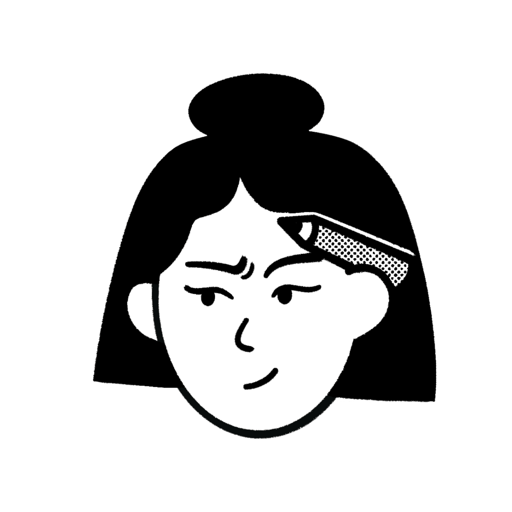

J'adore imaginer et développer des interfaces intuitives et des solutions qui allient esthétique et efficacité.
Grâce au code, j'ai développé patience, persévérance et organisation, tandis que mon côté créatif et mon œil pour le design m'apportent des approches originales et innovantes.
Mes années d'expérience dans le marketing digital et la communication font de moi une professionnelle capable de respecter ses engagements, de tenir les délais et de travailler dans des conditions exigeantes.
Mon ambition est de contribuer à des projets ayant un impact positif, en mettant mes compétences au service d'initiatives qui ont du sens. Je m'engage à transformer des idées en réalisations concrètes et percutantes.
Et si on créait quelque chose d'incroyable ensemble ?
Voir le CV
Développement d’un écosystème complet pour un hôpital fictif comprenant une application web, mobile et desktop. J’ai conçu l’interface, réalisé le MCD, développé les fonctionnalités principales (gestion des séjours, avis médicaux, plannings) en PHP avec une architecture MVC, et intégré des API sécurisées pour une communication en temps réel.
Tech:
Web : HTML5, CSS3, Bootstrap, PHP, MySQL.
Mobile : Flutter, Dart.
Desktop : Python (Tkinter).
Wavely — Outil d’auto-guérison en ligne par les fréquences sonores
Développement full-stack d’une application web dédiée au bien-être, permettant d’écouter des fréquences thérapeutiques en ligne. En binôme avec un autre développeur, j’ai conçu le design from scratch sur Figma, créé le design system, pensé l’architecture des composants, et participé à l’implémentation complète du back-end avec base de données. Le projet a été mené en méthode agile avec gestion par sprints, et déployé en ligne.
Tech: React, NodeJS, Figma, MySQL.
Création d’un site web pour une créatrice de jeux de société, conçu pour mettre en avant ses œuvres et services. J’ai structuré le site avec WordPress et le plugin Elementor Pro, en respectant une charte graphique existante. J’ai intégré des formulaires interactifs, un blog, et des fonctionnalités modernes pour offrir une interface fluide et intuitive. Résultat : un site clair et attractif, parfaitement adapté aux besoins de la cliente.
HTML
CSS
JavaScript
React
Node.js
PHP
Python
Java
GitHub
Figma